JD1(Ogasawara Is.) 写真集
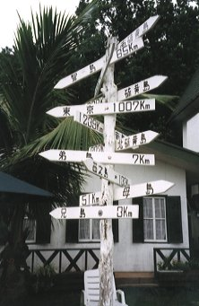
宿泊した「境浦ファミリー」の前に立つ「方位標識」
父島から東京まで1,007Km、南鳥島まで1,238Km
境浦海岸
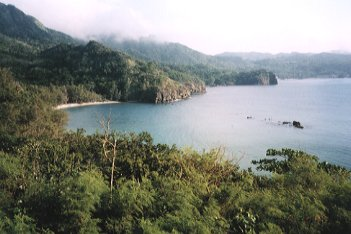
境浦海岸の全景
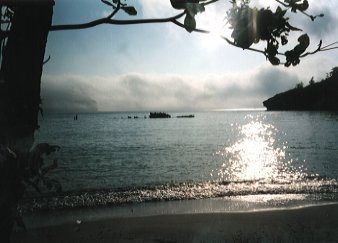
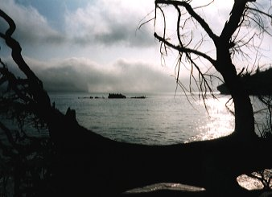
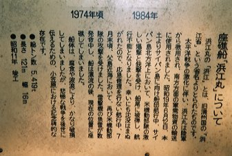
太平洋戦争の遺物、沈没船「浜江丸」の残骸が現在も残っている
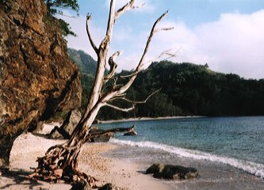
境浦の海岸。台風4号でこの海岸も一週間荒れ続けた...
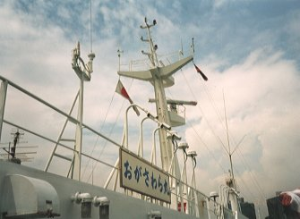
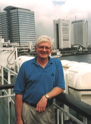
おがさわら丸船上のK5FUV
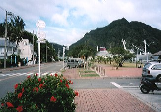
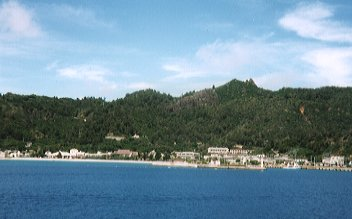
小笠原・父島の繁華街と海側から見た三日月山
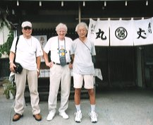
父島の名物？寿司店「丸丈」 島鮨が美味しい
左からJA1RJU K5FUV JA1BK

父島で一番高い場所にある「中央山の展望台」からJA方向を見る
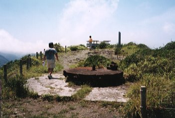
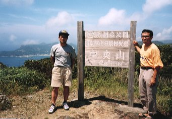
中央山の展望台脇に残る太平洋戦争当時の砲台跡／ JK7TKE/JD1(左)とJD1BIA・田久保さん
お世話になった"境浦ファミリー"の皆さん
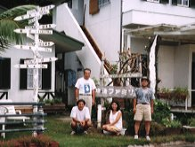
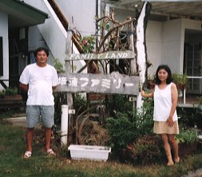
10日間滞在した「境浦ファミリー」とも今日でお別れ。(右)オーナーの遠藤さんご夫妻
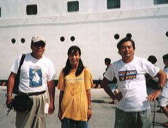
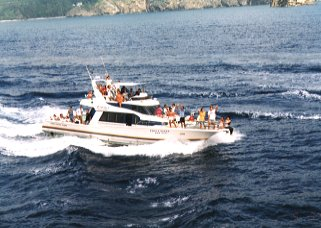
宿泊先の"境浦ファミリー"に見送られて帰途に...右側がオーナーの遠藤さん
二見港の外まで「おがさわら丸」に"伴走"してくれた。
|
Ogasawara Is. |
 |
JD1YAM EME CLUB |
 |
Flash ! DX |